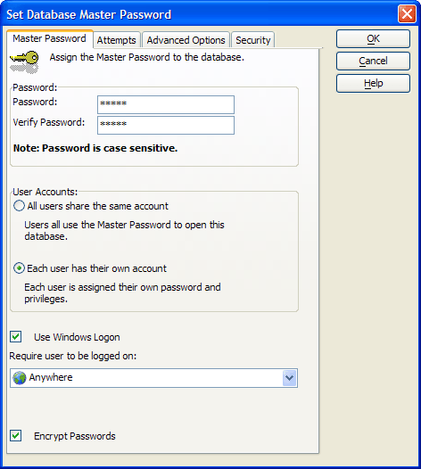

Setting Up Database Security
Alpha Five includes a security framework that lets you create a Master Password for a Database Administrator. The administrator can then define separate or shared user accounts and passwords.
Select Tools > Security > Set Database Password.

If you specify that a database has a password, the database may display a logon screen.
Enter the new password in the Password field.
Enter the new password in the Verify Password field
Users can be authenticated in three ways:
By using the master password to logon
By using individual passwords to logon
Automatically, using their Windows password - If this is checked, Alpha Five will automatically log the user in if the Windows user name matches a user in the Alpha Five database. If the user does not exist, he will be prompted for a logon name as usual. Logon as a different user is unaffected by this.
Optionally, select All users share the same account.
Optionally, select Each user has their own account.
If you selected, Each user has their own account you may check Use Windows Logon.
Optionally, change the Require user to exist value. The options are:
"Anywhere"
"On the specified computer" - the current computer
"In the specified domain" - the current domain
Optionally, check Encrypt Passwords.
On the Attempts tab optionally, specify the Maximum number of login attempts.
Optionally, specify a script to run if a user is unable to logon. This script could close Alpha Five, temporarily remove the user's access rights (refer to User and Group Management Functions ), display a message, and/or log the event.

On the Advanced Options tab, optionally select User Account File is specific to this database. This allows you to implement different access privileges for different databases.
Optionally select Use shared User Account File to implement shared security for multiple databases.
If you do not have a user account database, select Tools > Security > Define Users and Groups... to display the Users and Groups dialog box.
Click
 to navigate to and specify the User Account
Filename.
to navigate to and specify the User Account
Filename.
On the Security tab you may set default permissions for objects when the object has been neither granted nor denied a permission. For more information, refer to Object Level Security.
Click OK to implement your changes or Cancel to discard them.
Change Database Master Password
To change the master password, select Tools > Security > Change Password/Security Options > Change Master Password to display the Change Database Master Password dialog box.
Enter the Old Password.
Enter the New Password.
Re-enter the new Password in the Verify Password field.
Click OK to continue or Cancel to discard your input.
Select Tools > Security > Change Password/Security Options > Change Security Settings to display the Change Database Security Settings dialog box. Refer to Setting_Up_Database_Security.
To remove the database password, select Tools > Security > Remove Database Password to display the Remove Database Password dialog box.
Enter the current Master Password.
Click OK to remove the password or Cancel to quit without taking any action.
To change a user's login password, select Tools > Security > Change Password/Security Options > Change Login Password... to display the Change Login Password dialog box.
Enter the Current Password.
Enter the New Password.
Re-enter the new password in the Verify Password field.
Click OK to make the change or Cancel to quit without taking any action.
To create a customized logon dialog, select Tools > Security > Customize Logon Dialog... to display the Customize Logon Dialog dialog box.
On Page 1 optionally, enter a different Dialog Title.
Optionally, click
 to select a different icon to display on the dialog box.
to select a different icon to display on the dialog box.Click Preview to see how the dialog will appear.
Optionally, change the Logon Prompt for when you have specified individual user accounts.
Optionally, change the Logon Prompt for when users share the same user account.
On Page 2 optionally change the User Name Prompt.
Optionally, change the Password Prompt.
Optionally, change the OK Button text.
Optionally, change the Cancel Button text.
On Page 3 optionally add text for a Dialog Footer.
Optionally, clear Show list of all users.
Click OK to apply your changes or Cancel to discard them.
Once you have set a Master Password for a database, you can encrypt individual tables in the database. Once a table has been encrypted, you can use it normally within the database, but you will not be able to open the database in other contexts, such as with Microsoft Excel, or use it with other software programs that can read DBF files.
To encrypt or decrypt a table, select Tools > Security > Encrypt/Decrypt Tables... to display the Encrypt/Decrypt Tables dialog box.
Optionally, click Show Paths to display the path information for each table.
Place a check mark next to each table that you wish to encrypt.
Remove the check mark next to each table that you wish to decrypt.
Optionally, use the Select All and Unselect All buttons to select tables.
Click Apply to encrypt the tables.
Click Close to exit.
See Also
Users and Groups, Object Permissions
Supported By
Alpha Five Version 6 and Above